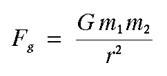
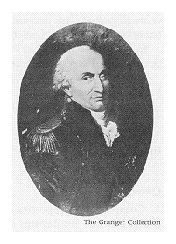
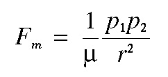

Magnetic Monopoles
Recall that the gravitational force exerted between two point masses of mass m1 and m2 separated by a distance r is given by Newton's law of gravitation, which is written as

where G is the gravitational constant. This law, in words, simply states that the gravitational force exerted between two bodies decreases as one over the square of the distance separating the bodies. Since mass, distance, and the gravitational constant are always positive values, the gravitational force is always an attractive force. 
Charles Augustin de Coulomb (right), in 1785, showed that the force of attraction or repulsion between electrically charged bodies and between magnetic poles also obey an inverse square law like that derived for gravity by Newton. To make the measurements necessary to prove this, Coulomb (independent of John Michell) invented the torsion balance.
The mathematical expression for the magnetic force experienced between two magnetic monopoles is given by  where is a constant of proportionality known as the magnetic permeability, p1 and p2 are the strengths of the two magnetic monopoles, and r is the distance between the two poles. In form, this expression is identical to the gravitational force expression written above. There are, however, two important differences.
- Unlike the gravitational constant, G, the magnetic permeability, is a property of the material in which the two monopoles, p1 and p2, are located. If they are in a vacuum, is called the magnetic permeability of free space.
- Unlike m1 and m2, p1 and p2 can be either positive or negative in sign. If p1 and p2 have the same sign, the force between the two monopoles is repulsive. If p1 and p2 have opposite signs, the force between the two monopoles is attractive.